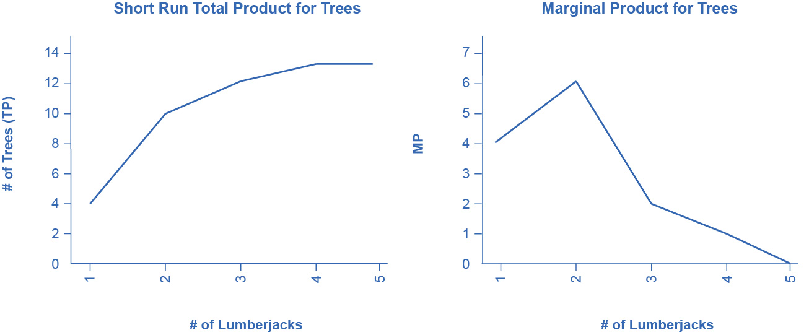

7.2 Production in the Short Run
Learning Objectives
By the end of this section, you will be able to:
- Understand the concept of a production function
- Differentiate between the different types of inputs or factors in a production function
- Differentiate between fixed and variable inputs
- Differentiate between production in the short run and in the long run
- Differentiate between total and marginal product
- Understand the concept of diminishing marginal productivity
In this chapter, we want to explore the relationship between the quantity of output a firm produces, and the cost of producing that output. We mentioned that the cost of the product depends on how many inputs are required to produce the product and what those inputs cost. We can answer the former question by looking at the firm’s production function.

Figure 7.3 The production process for pizza includes inputs such as ingredients, the efforts of the pizza maker, and tools and materials for cooking and serving. (Credit: “Grilled gluten-free BBQ chicken pizza” by Keith McDuffee/Flickr, CC BY 2.0)
Production is the process (or processes) a firm uses to transform inputs (e.g., labor, capital, raw materials) into outputs, i.e. the goods or services the firm wishes to sell. Consider pizza making. The pizzaiolo (pizza maker) takes flour, water, and yeast to make dough. Similarly, the pizzaiolo may take tomatoes, spices, and water to make pizza sauce. The cook rolls out the dough, brushes on the pizza sauce, and adds cheese and other toppings. The pizzaiolo uses a peel—the shovel-like wooden tool—to put the pizza into the oven to cook. Once baked, the pizza goes into a box (if it’s for takeout) and the customer pays for the good. What are the inputs (or factors of production) in the production process for this pizza?
Economists divide factors of production into several categories:
- Natural Resources (Land and Raw Materials) - The ingredients for the pizza are raw materials. These include the flour, yeast, and water for the dough, the tomatoes, herbs, and water for the sauce, the cheese, and the toppings. If the pizza place uses a wood-burning oven, we would include the wood as a raw material. If the establishment heats the oven with natural gas, we would count this as a raw material. Don’t forget electricity for lights. If, instead of pizza, we were looking at an agricultural product, like wheat, we would include the land the farmer used for crops here.
- Labor – When we talk about production, labor means human effort, both physical and mental. The pizzaiolo was the primary example of labor here. They need to be strong enough to roll out the dough and to insert and retrieve the pizza from the oven, but they also must know how to make the pizza, how long it cooks in the oven and a myriad of other aspects of pizza-making. The business may also have one or more people to work the counter, take orders, and receive payment.
- Capital – When economists uses the term capital, they do not mean financial capital (money); rather, they mean physical capital, the machines, equipment, and buildings that one uses to produce the product. In the case of pizza, the capital includes the peel, the oven, the building, and any other necessary equipment (for example, tables and chairs).
- Technology – Technology refers to the process or processes for producing the product. How does the pizzaiolo combine ingredients to make pizza? How hot should the oven be? How long should the pizza cook? What is the best oven to use? Gas or wood burning? Should the restaurant make its own dough, sauce, cheese, toppings, or should it buy them?
- Entrepreneurship – Production involves many decisions and much knowledge, even for something as simple as pizza. Who makes those decisions? Ultimately, it is the entrepreneur, the person who creates the business, whose idea it is to combine the inputs to produce the outputs.
The cost of producing pizza (or any output) depends on the amount of labor capital, raw materials, and other inputs required and the price of each input to the entrepreneur. Let’s explore these ideas in more detail.
We can summarize the ideas so far in terms of a production function, a mathematical expression or equation that explains the engineering relationship between inputs and outputs:
\(Q = f\left\lbrack NR\text{,}\ L\text{,}\ K\text{,}\ t\text{,}\ E \right\rbrack\)
The production function gives the answer to the question, how much output can the firm produce given different amounts of inputs? Production functions are specific to the product. Different products have different production functions. The amount of labor a farmer uses to produce a bushel of wheat is likely different than that required to produce an automobile. Firms in the same industry may have somewhat different production functions, since each firm may produce a little differently. One pizza restaurant may make its own dough and sauce, while another may buy those pre-made. A sit-down pizza restaurant probably uses more labor (to handle table service) than a purely take-out restaurant.
We can describe inputs as either fixed or variable.
Fixed inputs are those that can’t easily be increased or decreased in a short period of time. In the pizza example, the building is a fixed input. The restaurant owner signs a lease and is stuck in the building until the lease expires. Fixed inputs define the firm’s maximum output capacity. This is analogous to the potential real GDP shown by society’s production possibilities curve, i.e., the maximum quantities of outputs a society can produce at a given time with its available resources.
Variable inputs are those that can easily be increased or decreased in a short period of time. The pizzaiolo can order more ingredients with a phone call, so ingredients would be variable inputs. The owner could hire a new person to work the counter pretty quickly as well.
Economists often use a short-hand form for the production function:
\(Q = f\left\lbrack L\text{,}\ K \right\rbrack\text{,}\)
where L represents all the variable inputs, and K represents all the fixed inputs.
Economists differentiate between short and long run production.
The short run is the period of time during which at least some factors of production are fixed. During the period of the pizza restaurant lease, the pizza restaurant is operating in the short run, because it is limited to using the current building—the owner can’t choose a larger or smaller building.
The long run is the period of time during which all factors are variable. Once the lease expires for the pizza restaurant, the shop owner can move to a larger or smaller place.
Let’s explore production in the short run using a specific example: tree cutting (for lumber) with a two-person crosscut saw.

Figure 7.4 Production in the short run may be explored through the example of lumberjacks using a two-person saw. (Credit: “DO - Apple Day Civilian Conservation Corps Demonstration Crosscut Saw (Gladden)” by Virginia State Parks/Flickr, CC BY 2.0)
Since by definition capital is fixed in the short run, our production function becomes
\(Q = f\lbrack L\text{,}\ \overset{-}{K}\rbrack\ \text{or}\ Q = f\lbrack L\rbrack\)
This equation simply indicates that since capital is fixed, the amount of output (e.g., trees cut down per day) depends only on the amount of labor employed (e.g., number of lumberjacks working). We can express this production function numerically as Table 7.2 below shows.
Table 7.2 Short Run Production Function for Trees
Note that we have introduced some new language. We also call Output (Q) Total Product (TP), which means the amount of output produced with a given amount of labor and a fixed amount of capital. In this example, one lumberjack using a two-person saw can cut down four trees in an hour. Two lumberjacks using a two-person saw can cut down ten trees in an hour.
We should also introduce a critical concept: marginal product. Marginal product is the additional output of one more worker. Mathematically, Marginal Product is the change in total product divided by the change in labor: \(MP = \Delta TP/\Delta L\). In the table above, since 0 workers produce 0 trees, the marginal product of the first worker is four trees per day, but the marginal product of the second worker is six trees per day. Why might that be the case? It’s because of the nature of the capital the workers are using. A two-person saw works much better with two persons than with one. Suppose we add a third lumberjack to the story. What will that person’s marginal product be? What will that person contribute to the team? Perhaps they can oil the saw's teeth to keep it sawing smoothly or they could bring water to the two people sawing. What you see in the table is a critically important conclusion about production in the short run: It may be that as we add workers, the marginal product increases at first, but sooner or later additional workers will have decreasing marginal product. In fact, there may eventually be no effect or a negative effect on output. This is called the Law of Diminishing Marginal Product and it’s a characteristic of production in the short run. Diminishing marginal productivity is very similar to the concept of diminishing marginal utility that we learned about in the chapter on consumer choice. Both concepts are examples of the more general concept of diminishing marginal returns. Why does diminishing marginal productivity occur? It’s because of fixed capital. We will see this more clearly when we discuss production in the long run.
We can show these concepts graphically as Figure 7.5 and Figure 7.6 illustrate. Figure 7.5 graphically shows the data from Table 7.2. Figure 7.6 shows the more general cases of total product and marginal product curves.

Figure 7.5

Figure 7.6